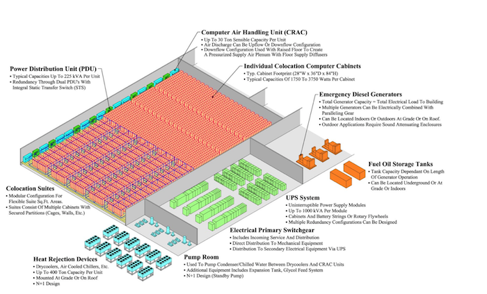

Datacenters are huge devices that use electrical power and produce heat in the process. It has a cooling system whose job is to remove that heat. This consumes additional energy which also has to be removed. Most of the money is spent either on power conditioning and distribution or on cooling systems.[1]
The design of a datacenter can be classified into different tiers:
This comprises of one path used to distribute the power and the cooling. There are no redundant components. Mainly used by smaller businesses.[1]
There are redundant components – N + 1 typically, in order to help availability.[1]
There is only one active path but several paths are provided for cooling and power. There are redundant components in each path – usually N + 2. During maintenance, there is still redundancy. Mainly used by larger organisations.[1]
Mainly used by big enterprise corporations. There are two active paths for cooling and power. Each path has redundant components. Can manage failures with single equipment without any impact on the load.[1]
Hover over the bars to see the statistics in detail.
[2]Redundancy is needed for a variety of reasons:
Power enters building from outside transformer it stops at the primary switchgear which includes breakers to protect it against electrical faults and has transformers which scale the voltage down to 400-600V the low voltage power flows to Uninterruptible Power Supply (UPS) which has a second feed at the same voltage so that the diesel generators can be used if the utility power fails UPS output is routed to Power Distribution Units (PDUs) which take a high voltage feed (usually 200-480V) and split it into smaller circuits – typically 110 or 220V. Each circuit has its own breaker so that if there is a ground short, only that breaker would be affected and not the entire PDU.
The role of the UPS (Uninterrupted Power Supply):
Due to its size, the UPS is contained in a separate room and not on the datacenter floor. Size can range from hundreds of kilowatts to 2MW.
Normally, the datacenter’s floor is raised. The underfloor area can be used to route the power cables to the racks, but its main use is to distribute the cool air to the server racks.
In more recent datacenters, other methods of cooling can also be used.
Free cooling is more energy efficient as opposed to just cooling with a chiller.
[1] L. A. Barroso, and U. Hölzlem. The Datacenter as a Computer. 1st ed. San Rafael: Morgan & Claypool Publishers, 2009, pp. 39-45. [Online] Available: http://www.morganclaypool.com/doi/pdf/10.2200/s00193ed1v01y200905cac006
[2] "Data Center Tier Rating Breakdown - Tier 1, 2, 3, 4 - CLA", Colocation America, 2018. [Online]. Available: https://www.colocationamerica.com/data-center/tier-standards-overview.htm.
[3] "How Data Center Redundancy Helps Your Business", Miami and Broward Colocation | Volico Data Center, 2018. [Online]. Available: https://www.volico.com/how-data-center-reliability-and-redundancy-directly-helps-your-business/.
[4] "Gigaom | Top 5 places to build a new data center", Gigaom.com, 2011. [Online]. Available: https://gigaom.com/2011/12/10/latimer-where-to-build-data-center/.
[5] "The top ten best countries to locate a data center", DatacenterDynamics, 2009. [Online]. Available: http://www.datacenterdynamics.com/content-tracks/power-cooling/the-top-ten-best-countries-to-locate-a-data-center/32694.fullarticle.
[6] "The “Where” and “Why” of Choosing Data Center location - Expedient", Expedient, 2018. [Online]. Available: https://www.expedient.com/blog/the-where-and-why-of-choosing-data-center-location/.
Additional resources to help create this page:
https://getbootstrap.com/docs/4.0/components/card/